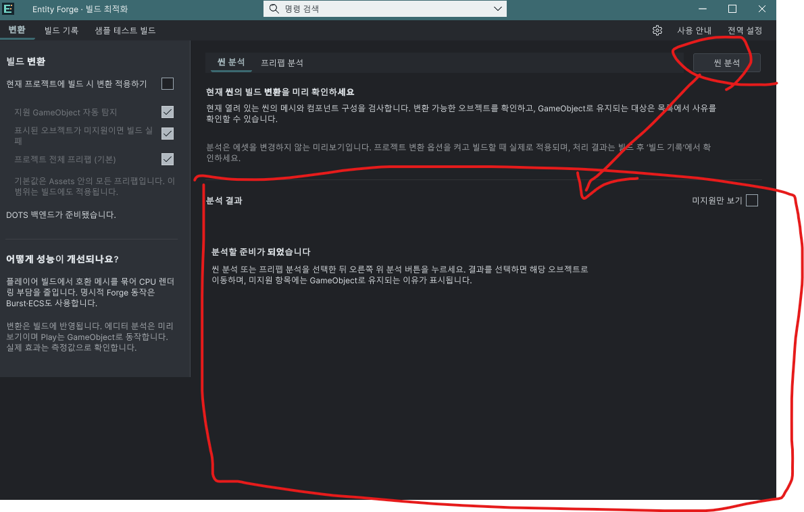

Tracefolio REPORTS & ISSUES
Tracefolio REPORTS & ISSUES분석 실행 버튼과 결과를 하나의 박스로 통합
검증 대기사용자가 표시한 결과 영역에 테마 박스를 적용하고 분석 버튼을 박스 내부 상단으로 이동했습니다.
작업 결과
분석 결과 제목·필터·실행 버튼과 목록/빈 상태 안내가 한 박스 안에 있습니다. 기존 씬/프리팹 탐색과 상단 설명은 유지합니다.
변경 내용
적용 내용
UXML의 analysis-results-card 안에 분석 버튼 2개(현재 모드만 표시), 미지원 필터, 결과 수, 경로와 목록을 포함했습니다. 16px 안쪽 여백·테두리·모서리와 테마 Surface/Border 색을 적용했습니다. 실행 안내도 이 상자 오른쪽 위의 버튼을 가리키도록 9개 언어로 수정했습니다. 헬프박스는 추가하지 않았습니다.
검증
검사 근거. 실제 UXML을 XML 파서로 검사해 버튼과 목록이 같은 상자 안에 있음을 확인했습니다. 7개 어셈블리 컴파일, 문서 9개·링크 126개 검사와 패키지 400개 에셋 대조 통과. 패키지 SHA-256 31b299820ef8bb99dbb939090793e4d6117ff58ae7d9f8d894e7e2f5cb0cc8e5. 화면 조작·에디터 명령·빌드는 실행하지 않았습니다.
수정 전 사용자 제공 실제 화면입니다. 표시된 결과 영역 바깥에 분석 버튼이 있습니다. 원본을 편집하지 않고 첨부했습니다.

남은 사항
사용자 화면 조작 금지로 수정 후 실제 화면 및 밝은/어두운 테마의 배치·상호작용 검증은 미실행입니다. 전후 화면 비교 완료로 표시하지 않습니다. 이전 맵/미리보기의 실제 화면 검증도 유지합니다. 교훈 검토: 실행 버튼과 그 결과는 사용자가 지정한 동일 영역 안에 배치합니다. 이번 요구는 프로젝트 메뉴얼에 기록하고 전역 변경은 하지 않았습니다.
작업 시간
- 제안 시간: 3~5분 · 시작 2026-11-03 00:07:49 KST
- 실제로 완료된 시간: 배치·컴파일·문서·패키지 반영 1분 36초 · 2026-11-03 00:09:25 KST. 게시 배포는 이후 확인.
- XERJ: 실패 — Xerj.ps1 Status: XERJ node is not running. rg와 현재 소스로 확인.